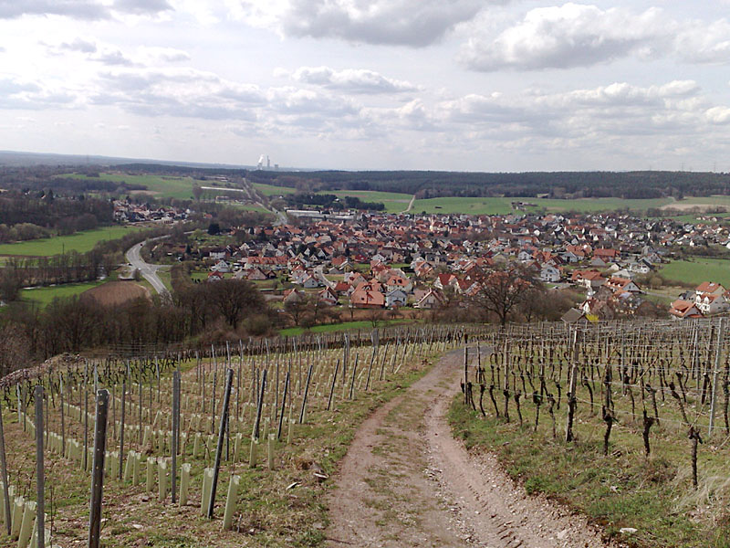

Communication, because we spent more and more of our time communicating
Home


Reach me here
Current Projects
 Inquire by Tamper
Inquire by Tamper
Inquire is a context-aware Wikipedia reader for iOS. (formerly known as Curiosity)
 Tamper
Tamper
Started a indie Mac & iOS software company in 2013. Inquire and Morning are our current apps.
 Morning
Morning
A morning organizer for your iPad and iPhone. Get a quick overview of what you need to do each day, every morning. It's been featured in the App Store multiple times, pre-installed in the Apple Store's worldwide, and was selected as an Editors' Choice.
 Edwin48
Edwin48
A port of MIT Scheme's Edwin Editor to Scheme48. Nobody likes writing Emacs Lisp, this is a long running Scheme Underground project to provide an alternative to Emacs written in a modern Lisp.

Some Past Work
 Rdio (2012)
Rdio (2012)
Worked on version 2 of Rdio for iPhone and iPad. Helped maintain and added features to the Mac Desktop app (gestures, more AppleScript support, ect) as well as the Roku set top box.
 Camino (2007–2009)
Camino (2007–2009)
Contributed to the Camino Web Browser by fixing bugs and adding new features, most notably Tabsposé.
 HAL 9000 (2007)
HAL 9000 (2007)
Fun little Mac application that used the iSight and Voice Commands to replicate the famous computer from Stanley Kubrick's 2001: A Space Odyssey.
 Corripio (2005–2007)
Corripio (2005–2007)
My first Mac application I wrote in High School. Corripio would download high resolution artwork from the iTunes store and save it to your mp3s that were missing them. It also fixed ID3 tags and added song lyrics when available. It was featured in the August 2006 issue of Macworld.